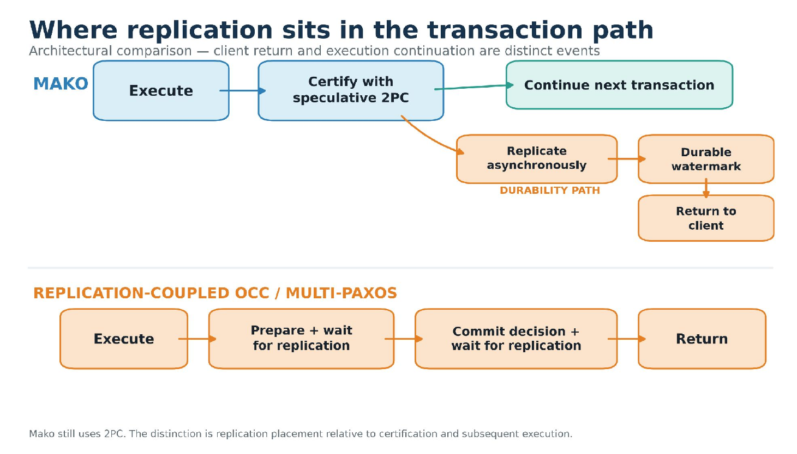
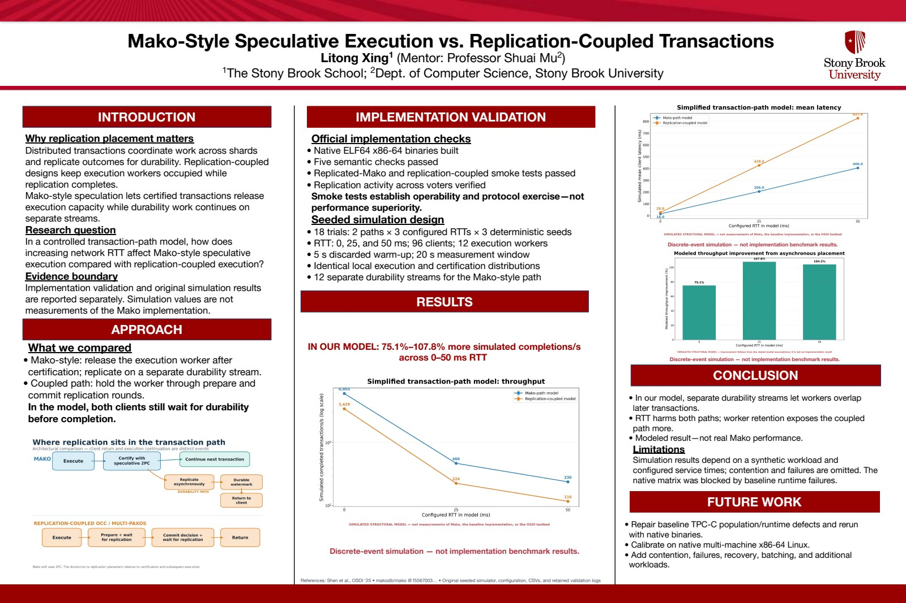

DISTRIBUTED SYSTEMS
Speculative transactions across distances.
At the Computer Science and Informatics Summer Research Experience program, I worked under Professor Shuai Mu to study Mako: Speculative Distributed Transactions with Geo-Replication.

Research focus
I studied distributed transaction systems and how speculative execution and geo-replication relate to traditional two-phase commit.

My work
- Modeled and compared distributed transaction approaches.
- Investigated geo-replication, traditional two-phase commit, and speculative execution as part of the summer research project.
Research output
I presented the work in a final paper, a research poster, and a symposium presentation.
Mako-Style Speculative Execution vs. Replication-Coupled Transactions

Methods & tools
Distributed transactions · Geo-replication · Speculative execution